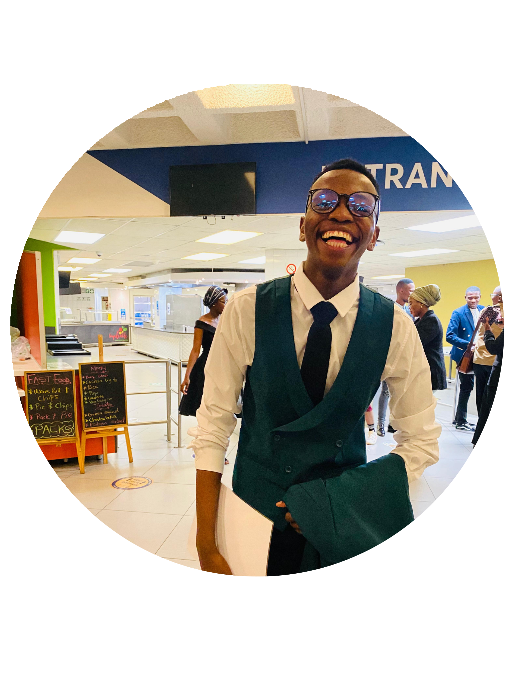

Hello, I’m
Given Makofane
Computer Science Graduate · Data Enthusiast · Student Mentor · QYF Alumni


Hello, I’m
Computer Science Graduate · Data Enthusiast · Student Mentor · QYF Alumni
I am a Computer Science graduate from the University of the Witwatersrand with a strong academic and practical foundation in software development, data analytics, and problem-solving. I am an analytical thinker and lifelong learner who is passionate about applying technology to solve real-world challenges in business, education, and community-focused environments.
I bring a balance of technical capability, leadership experience, and strong communication skills, developed through academic projects, internships, tutoring roles, and collaborative team environments.
I hold a Bachelor’s degree in Computer Science from the University of the Witwatersrand (2025) and am currently pursuing a Postgraduate Diploma in Innovation and Entrepreneurship at the same institution. My academic background includes programming, algorithms, data structures, databases, and analytical problem-solving.
I have been recognized for academic excellence, achieving distinctions in Database Fundamentals and Introduction to Algorithms and Programming. These experiences strengthened my ability to design efficient solutions and approach problems logically.
My technical skill set spans both software development and data analytics. I have experience working with Python, Java, and C++, as well as tools such as Power BI, Excel, Power Query, and basic DAX. I enjoy transforming raw data into meaningful insights and building user-focused applications that prioritize clarity and usability.
I completed a virtual internship with SAGEA as part of the Quantify Your Future (QYF) programme, where I worked on real-world data analysis projects aligned with South Africa’s skills and labour market challenges. I analyzed Higher Education Management Information System (HEMIS) data to investigate student enrolment trends, graduation outcomes, and skills alignment, producing structured, evidence-based insights.
At the University of the Witwatersrand, I served as an Academic Tutor for Introduction to Data Structures and Algorithms and Basic Computer Organisation. I also worked as a Lead Student Mentor, supporting students with academic adjustment, time management, and personal development. These roles strengthened my communication, leadership, and mentoring abilities.
I have worked on several technical projects, including a Power BI Sales Insights Dashboard, a responsive school website built with React and Tailwind CSS, and a final-year Event Planner web application where I served as Project Manager and Documentation Lead. These projects required a combination of technical implementation, Agile coordination, and clear documentation.
I also participated in the Adapt IT Social Good Hackathon and AWS Cloudathon, contributing to the frontend development of a mobile application aimed at connecting disadvantaged communities with freelancing opportunities.
I am currently seeking entry-level or graduate opportunities in software development, data analytics, or technology-focused roles where I can continue learning, contribute meaningfully, and grow professionally in collaborative environments.
Email: givenmakofane0@gmail.com
LinkedIn: Given Makofane
Phone: +27 72 739 4067